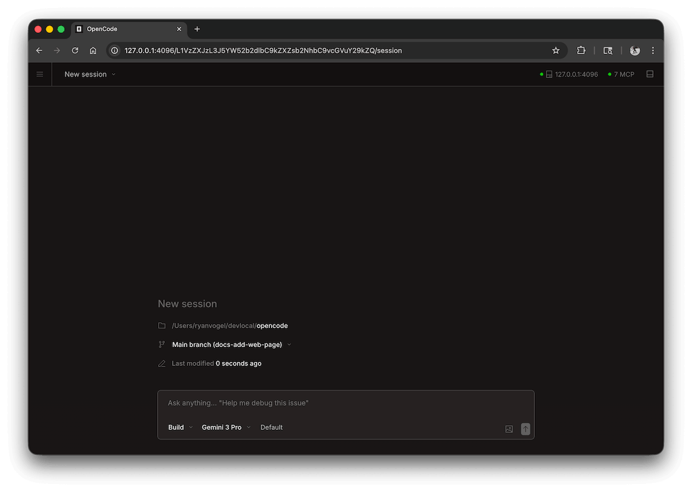
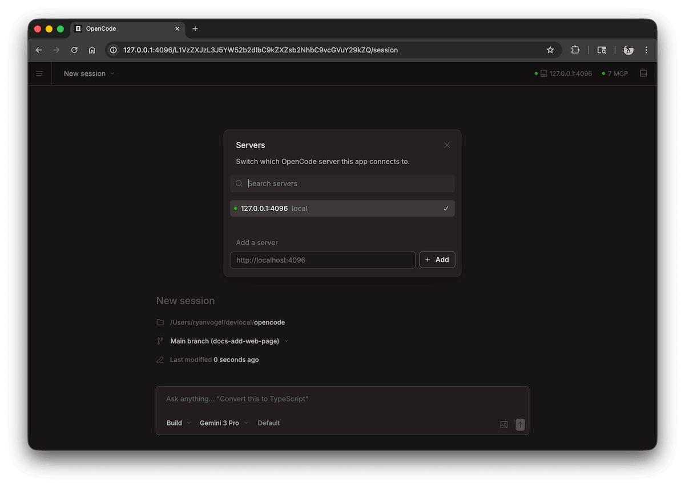

OpenCode Web の使用（ブラウザーインターフェース）
ターミナル（TUI）に加えて、OpenCode は Web インターフェースも提供しており、ブラウザーで直接 AI プログラミング機能を利用できます。
Web モードは、リモートアクセス、チームコラボレーション、視覚的な操作に適しています。
OpenCode Web は TUI のグラフィカル版であり、AI プログラミングをターミナルツールからビジュアルなコラボレーションプラットフォームへとグレードアップさせます。
一、OpenCode Web とは？
OpenCode Web は HTTP サービスベースのグラフィカルインターフェース版であり、本質的には：
- バックエンド：OpenCode サービス（CLI 起動）
- フロントエンド：ブラウザーインターフェース
次のように理解できます：TUI のビジュアル版

二、Web サービスの起動
1、基本起動
opencode web
デフォルトでは：
- ローカル HTTP サービスを起動
- ブラウザーを自動的に開く
2、ポートのカスタマイズ
opencode web --port 4096
3、外部アクセスの許可（重要）
opencode web --hostname 0.0.0.0 --port 4096
ローカルネットワークまたはリモートからアクセス可能
三、アクセス方法
起動後、ブラウザーでアクセス：
http://localhost:4096
または：
http://你的IP:4096
四、インターフェースの説明
OpenCode Web のインターフェースには通常、以下が含まれます：
- 入力エリア：プロンプトを入力（ChatGPT に類似）
- 対話エリア：AI の出力結果を表示
- ファイルコンテキスト：プロジェクトコードを自動的に読み取り
- 操作ログ：コマンド実行と変更ログ
本質は TUI と同じですが、より直感的です
五、基本的な使用方法
1、質問
このプロジェクトの構造を分析してください
2、ファイルの参照
这个函数是做什么的？@src/index.js
3、修正の実行
この関数を3つの関数に分割し、エラー処理を追加してください
説明：
- Web と TUI のコマンドは完全に同じです
- コンテキスト理解も同様にサポートします
4、セッション
ホームページでセッションを表示および管理できます。アクティブなセッションを表示したり、新しいセッションを作成したりできます。

5、サーバーステータス
クリックSee Servers接続されているサーバーとそのステータスを確認できます。

六、認証（セキュリティ設定）
パブリックネットワークやチーム環境で使用する場合は、認証を有効にすることをお勧めします：
export OPENCODE_SERVER_PASSWORD=123456 opencode web
説明：
- ユーザー名のデフォルト：opencode
- パスワード：設定した値
七、よくある使用シーン
1、リモート開発
- サーバーで OpenCode を実行
- ブラウザーからリモートアクセス
2、チーム共有
- 複数人で AI の修正結果を確認
- 対話コンテキストを共有
3、デモ / 教学
- ターミナルよりも直感的
- 画面録画やプレゼンテーションに適しています
八、Web vs TUI
| 観点 | TUI（ターミナル） | Web（ブラウザー） |
|---|---|---|
| 使用方法 | コマンドライン | グラフィカルインターフェース |
| 操作効率 | 高い（ショートカットキーが多い） | 中 |
| 可視化 | 弱い | より直感的 |
| リモートアクセス | 比較的複雑 | 簡単 |
| 適した人 | 開発者 | 初心者 / チーム |
九、よくある質問
1、ページにアクセスできない
確認事項：
- ポートが開放されているか
- 正しいアドレス（localhost / IP）を使用しているか
2、リモートアクセスできない
以下を使用していることを確認してください：
--hostname 0.0.0.0
3、ポートが使用中
ポートを変更：
opencode web --port 5000その他の拡張機能